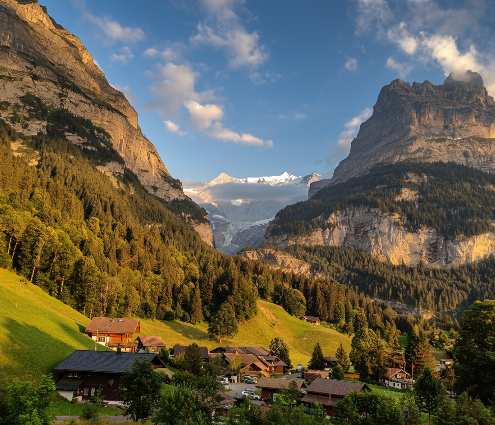
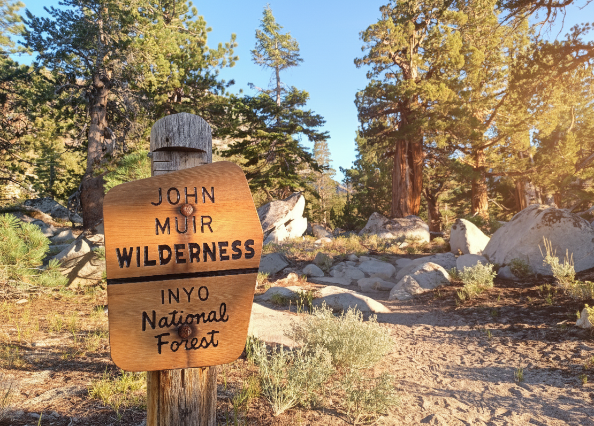
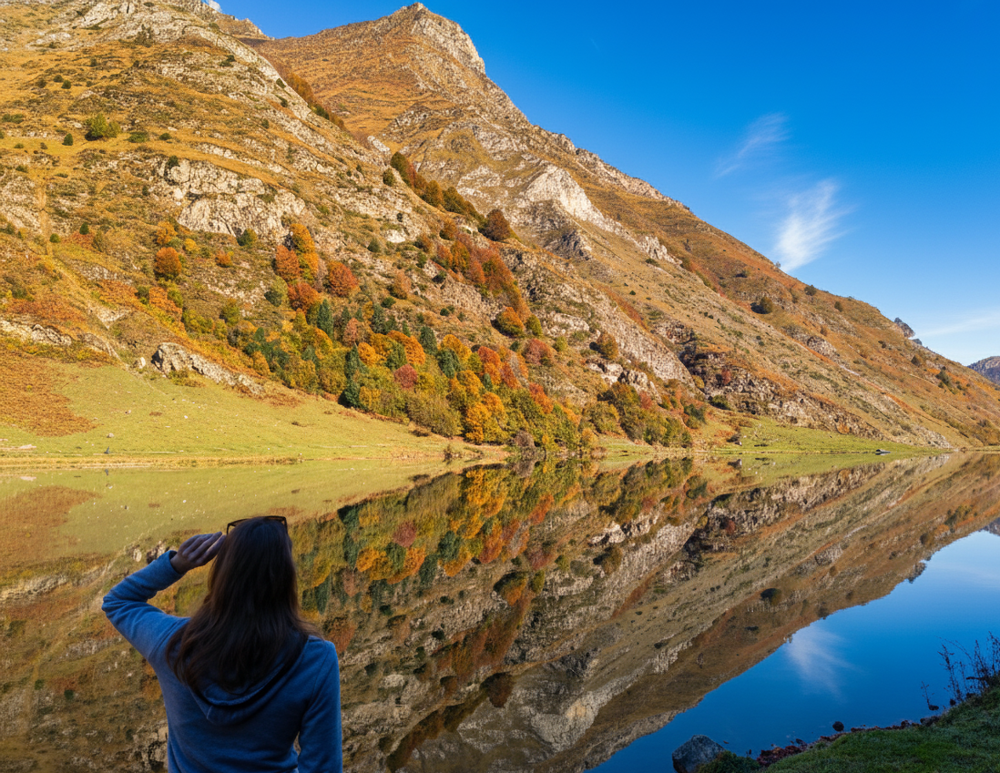
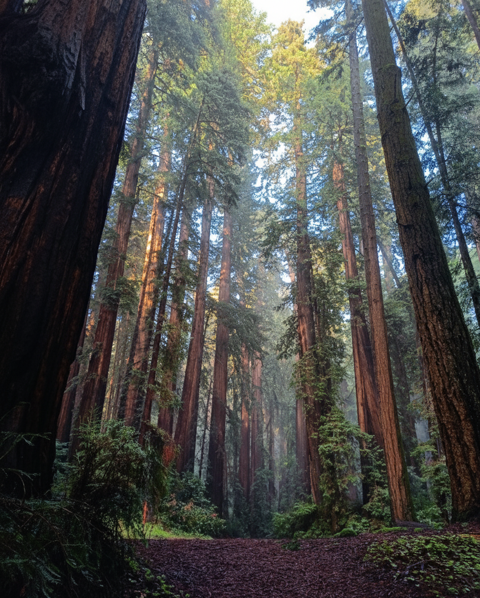

traveling
A few photos from trips over the years, with places I've visited shaded green on the map. Many of these trips involved walking uphill for a bit and then some.
The map couldn't load. The photos below are still here to browse.




